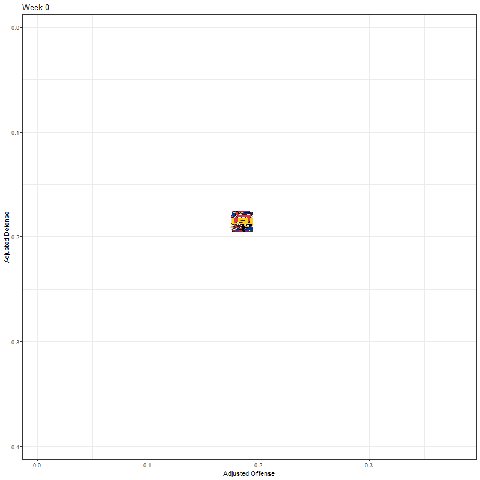

library(httr)
library(tidyjson)
library(tidymodels)
library(tidyr)
# get game info for 2021
# df <-
# httr::GET(
# url = "https://api.collegefootballdata.com/games?year=2021",
# httr::add_headers(
# Authorization = paste("Bearer", Sys.getenv("YOUR_API_TOKEN"))))
#
# games21 <- tibble(data = content(df, "parsed")) %>% unnest_wider(data)
#
# rm(df)
#
# games21 <-
# games21 %>%
# select(id, season, week, neutral_site, home_team, home_conference, home_pregame_elo,
# away_team, away_conference, away_pregame_elo)
#
# saveRDS(games21, "games21.RData")
games <- readRDS("games21.RData")
head(games)Adjusted Statistics
R
ggplot2
college football
sports analytics
Adjusted statistics for college football teams based on strength of schedule.
The idea for this post started off as essentially a replication of this post but using R and Tidymodels instead of Python. Once I got that done, I had an idea of making an animated plot instead of the static plot at the end of the post I referenced. I also wanted to get that code worked out because I noticed that a couple of animated images in a tutorial I had written weren’t rendering.
Get the Data
I’m not going to go through all the detail about why I’m going through these steps because, again, it’s just re-creating what was done in the above link. In a nutshell, I’m going to calculate adjusted offense and defense scores for FBS college football teams based on each team’s strength of schedule week by week through the 2021 season.
I’m also not going to go over making API calls because 1) I covered that here, and 2) I’ve already downloaded that data and saved it to disk. You can see the code necessary for the API calls commented out, but really I’m just reading the data from disk that I saved earlier. The first data set games is basic information about each game of the season.
Then I get a dataset that identifies which teams are FBS teams, so I can filter out the games against non-FBS opponents.
# get the ID of non-FBS games
# fbs_teams <-
# httr::GET(
# url = "https://api.collegefootballdata.com/teams/fbs?year=2021",
# httr::add_headers(
# Authorization = paste("Bearer", Sys.getenv("YOUR_API_TOKEN"))))
#
# fbs <-
# tibble(data = content(fbs_teams, "parsed")) %>%
# unnest_wider(data) %>%
# unnest_wider(logos) %>%
# rename("logo" = "...1", "logo2" = "...2") %>%
# select(-location)
#
# saveRDS(fbs, "fbs_teams.RData")
# rm(fbs_teams)
fbs <- readRDS("fbs_teams.RData")
fbsIDs <-
games %>%
filter(home_team %in% (fbs %>% .$school) &
away_team %in% (fbs %>% .$school)) %>% .$id
games <- games %>% filter(id %in% fbsIDs)The last dataset contains play-by-play statistics for each games. I’m primarily interested in the ppa column, which is the predicted points added of each play and apparently is the same thing as EPA - expected points added. I also do some manipulation to account for home field advantage.
# get PBP data
# for (wk in 1:max(games$week)){
# print(wk)
# df <-
# httr::GET(
# url = paste0("https://api.collegefootballdata.com/plays?year=2021&week=", as.character(wk)),
# httr::add_headers(
# Authorization = paste("Bearer", Sys.getenv("YOUR_API_TOKEN"))))
#
# if (wk == 1){pbp21 <- tibble(data = content(df, "parsed")) %>% unnest_wider(data)}
# else{pbp21 <- pbp21 %>% bind_rows(tibble(data = content(df, "parsed")) %>% unnest_wider(data))}
# }
#
# rm(df, wk)
# saveRDS(pbp21, "pbp21.RData")
pbp21 <- readRDS("pbp21.RData")
pbp21 <-
pbp21 %>%
filter(game_id %in% fbsIDs) %>%
select(game_id, offense, defense, home, ppa) %>%
drop_na() %>%
left_join(games %>%
select(id, neutral_site, week),
by = c("game_id" = "id")) %>%
mutate(
hfa = case_when(
home == offense ~ 1,
home == defense ~ -1),
hfa = ifelse(neutral_site, 0, hfa)) %>%
select(offense, hfa, defense, ppa, week) %>%
mutate_if(is.character, factor)
pbp21 <- pbp21 %>% mutate(ppa = as.numeric(as.character(ppa)))
head(pbp21)Ridge Regression
This block of code loops over the weeks of the season, tunes and fits a ridge regression model for each week. The regression model for week 1 includes all week 1 play-by-play data, the week 2 model includes week 1 and 2, and so on.
# define the model
lm_mod <-
linear_reg(penalty = tune(), mixture = 0) %>%
set_engine("glmnet")
# hyperparameter tuning grid
lambda_grid <- tibble(penalty = c(0, 10^seq(-2, 2, length.out = 25)))
# loop through the weeks
for (wk in 1:15){
# define the recipe
lm_rec <-
recipe(ppa ~ ., data = pbp21 %>% filter(week <= wk) %>% select(-week)) %>%
step_dummy(all_nominal_predictors(), one_hot = TRUE)
# cread cross-validation folds
folds <- vfold_cv(pbp21 %>% filter(week <= wk) %>% select(-week), v = 5)
# define the workflow
lm_wflow <-
workflow() %>%
add_model(lm_mod) %>%
add_recipe(lm_rec)
# get the tuning results
lm_res <-
lm_wflow %>%
tune_grid(
resamples = folds,
grid = lambda_grid,
control = control_grid(save_pred = TRUE)
)
# get the model with the lowest root mean squared error
lowest_rmse <- lm_res %>% select_best("rmse")
# finalize the workflow with the best model
lm_final_wf <-
lm_wflow %>%
finalize_workflow(lowest_rmse)
# get the final fit
lm_final_fit <-
lm_final_wf %>%
fit(pbp21 %>% filter(week <= wk) %>% select(-week))
# extract the coefficients
adjStats <-
broom::tidy(lm_final_fit) %>%
separate(term, into = c("side", "team"), sep = "_", fill = "left") %>%
select(-penalty)
# separate the intercept and home field advantage coefficients
otherTerms <-
adjStats %>%
slice(1:2) %>%
select(-side)
# get the remaining coefficients
adjStats <-
adjStats %>%
slice(3:nrow(adjStats))
# add the intercept term to the other coefficients
adjStats <-
adjStats %>%
mutate(estimate = estimate + otherTerms %>%
filter(team == "(Intercept)") %>% .$estimate)
# fix team name formatting (Oregon.State to Oregon State)
adjStats <-
adjStats %>%
mutate(team = stringr::str_replace_all(team, "\\.", " "))
# make dataframe wider
adjStats <-
adjStats %>%
pivot_wider(names_from = side, values_from = estimate) %>%
rename("adjOff" = "offense", "adjDef" = "defense")
# get the unadjusted (raw) stats - although I don't need this for the plot later
rawOff <-
pbp21 %>%
group_by(offense) %>%
summarize(meanPPA = mean(ppa)) %>%
rename("team" = "offense", "rawOff" = "meanPPA")
# same thing for raw defense
rawDef <-
pbp21 %>%
group_by(defense) %>%
summarize(meanPPA = mean(ppa)) %>%
rename("team" = "defense", "rawDef" = "meanPPA")
# bind everything together into one dataframe
if (wk == 1){
df <-
adjStats %>%
left_join(rawOff, by = "team") %>%
left_join(rawDef, by = "team") %>%
mutate(week = wk)}
else{
df_new <-
adjStats %>%
left_join(rawOff, by = "team") %>%
left_join(rawDef, by = "team") %>%
mutate(week = wk)
df <- df %>% bind_rows(df_new)
}
}
head(df)Animated Plot
Now the visualization. I’ll use gganimate to animate the plot and ggimage to render team icons on the plot.
library(gganimate)
library(ggimage)Performing ridge regression caused a team names to get messed up if they had non alphanumeric characters, so I’ll fix that. There’s also no week 0 to use as a starting point, so to get them roughly centered, I’ll just set them as the mean of week 1 stats. Lastly, I add the links to the team logos.
df <-
df %>% mutate(team = case_when(
team == "Hawai i" ~ "Hawai'i",
team == "Miami OH " ~ "Miami (OH)",
team == "Texas A M" ~ "Texas A&M",
TRUE ~ team
))
# Add a week 0
df <-
tibble(team = fbs$school,
adjOff = df %>% filter(week == 1) %>% .$adjOff %>% mean(),
adjDef = df %>% filter(week == 1) %>% .$adjDef %>% mean(),
rawOff = 0,
rawDef = 0,
week = 0) %>%
bind_rows(df)
# add logos
df <- df %>%
left_join(fbs %>% select(school, logo), by = c("team" = "school"))To generate the plots with team logos, I use geom_image(), and the last 5 lines are used by gganimate in a later code chunk. This block of code is fast to execute.
stats_plot <-
ggplot(df, aes(x=adjOff, y=adjDef)) +
geom_image(aes(image = logo, group = seq_along(logo))) +
theme_bw() +
scale_y_reverse() +
xlab("Adjusted Offense") +
ylab("Adjusted Defense") +
ggtitle("Week {closest_state}") +
transition_states(week, transition_length = 3, state_length = 3, wrap = FALSE) +
ease_aes("linear")Finally I’ll create the animated gif. It took my laptop about 15 minutes to generate the graphic. One thing that could be improved for efficiency is that the logo column contains URLs for the team logos. There are 130 logos and 16 weeks (including week 0), so I’m getting the same 130 logos 16 times when I should only need to get them once. I haven’t worked out how to solve that yet, but for now at least I have something that works.
animate(stats_plot,
width = 800, height = 800,
fps = 10, nframes = 90, end_pause = 10)